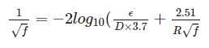
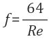

배관의 압력손실 계산
1. 개 요
배관의 관경선정은 배관의 적정유속, 시스템 허용압력손실, 경제성등의 여러가지 요소를 종합 검토한 후에 선정하여야 한다.
배관의 유속은 공정의 종류별 특성에 따라 적정유속 가이드를 기준으로 기준관경을 선정하면 되며, 배관의 압력손실 계산은 Colebrook Equation 및 Darch-Weisbach equation을 이용하여 계산하면 된다.
2. 배관의 유속 계산
배관의 유속계산식
배관의 유속 계산은 다음 계산식에 의하여 계산한다.
V = (4 x Q) / (𝜋 x d^2)
여기에서
V : 유 속 (m/s)
Q : 유 량 (m3/s))
d : 배관의 내경 (m)
배관의 적정유속
다음은 일반적인 배관의 적정유속을 정리한 자료로서, 관경선정시에 참고 가이드 자료로 활용하기 위한 자료입니다.
| Service Condition 공정의 종류 |
유속(m/s) | 비 고 | |
|---|---|---|---|
| Steam Heater | 5-15 | ||
| Boiler Feed | 2.5-4.6 | ||
| Pump Suction and drain lines |
1.2-2.1 | ||
| General service | 1.2-3.0 | ||
| City water | to 2.1 | ||
| Saturated Steam heating line |
20.32-30.48 | ||
| Super-heater steam boiler and turbines |
35.6-101.6 | ||
| Hight Pressure Saturatd steam |
25-40 | ||
| Low Pressure Saturated steam |
15-30 | ||
| Raw or treated water | 1.0-5.0 | ||
| Boiler feed pump suction | 1.0 | ||
| Boiler feed pump discharge | 3.0 | ||
| Flash steam | 5-15 | ||
| Condensate | 1.0-3.0 | ||
| Compressed air | 5.0-15 | ||
| FD fan discharge | 8-10 | Heat exchanger tube | Copper | 1.8-2.3 |
| Carbon steel | 2.4-2.7 | ||
| 90/1- CuNi | 2.9-3.3 | ||
| Stainless steel | 2.9-3.3 | ||
| Heat exchanger nozzle velocity |
2.1-2.4 | ||
| Heat exchanger shell nozzle velocity |
2.4-2.7 | ||
3. 배관의 압력손실 계산
레이놀즈 수 (Renolds Number)
레이놀즈 수는 관성에 의한 힘와 점성에 의한 힘의 비로서 주어진 유동 조건에서 두 종류의 힘의 상대적인 역학관계를 정량적으로 나타낸 것으로서, 유동이 층류인지 안류인지 예측하는데에도 사용된다.
Re = (V x d) / ν
여기에서
Re : 레이놀즈 수
V : 유체의 유속 (m/s))
d : 배관의 내경 (m)
ν : 유체의 동점성계수 (m2/s)
등가거칠기 (Roughness)
Pipe Roughness는 배관의 등가 거칠기(절대조도)라고 하며 관의 종류별 Roughness는 다음과 같다.
| 관의 종류 | 등가거칠기(조도, m) | 비 고 |
|---|---|---|
| 인발관(동관, 유리관) | 0.0000015 | |
| PVC (폴리에틸렌관) | 0.0000050 | |
| 강관 (New ~ Old | 0.0000450 ~ 0.0001500 | |
| 아연도 강관 | 0.0001500 | |
| 녹이슬은 강관 | 0.0050000 ~ 0.0010000 | |
| 대단히 녹슬은 강관 | 0.0010000 ~ 0.0030000 |
배관의 압력손실계수 (Friction Factor)
배관의 압력손실계수는 Colbrook Equation으로 계산하며 다음과 같은 식을 사용한다.

상기 수식은 계산하기가 어려워 층류일 경우 다음 식으로 계산할 수 있습니다.

여기에서
f : 압력손실계수(friction factor)
ϵ : 등가거칠기 (m)
D : 배관의 내경 (m)
Re(R) : 레이놀즈 수 (Renolds Number)
배관의 압력손실 (Pipe Head Loss)
배관의 압력손실은 Darch-Weisbach equation으로 계산하며 다음과 같이 식을 사용한다.

여기에서
HL: 압력손실 (mAq)
f : 압력손실계수 (friction factor) (m)
l : 배관의 길이 (m)
V : 유체의 유속 (m/s)
d : 배관의 내역 (m)
g : 중력가속도 (9.8m/s2)
| 압력(kg/cm2.g) | 온도(℃) | 유량(kg/h) | 관경(mm) | 조도(m) | 유속(m/s) | 압력손실(mAq/m) |
|---|---|---|---|---|---|---|
배관부속 및 밸브류의 등가길이(Equivalent Length)
Equivalent Length는 배관 부속과 밸브류등에 걸리는 압력손실을 직선배돤의 길이로 환산한 길이를 말하며, 배관부속과 밸브류의 Equivlent Length를 계산한 후에 실제 직관의 길이에 더하여 전체 배관내에서 걸리는 배관의 압력손실을 계산할 대 사용합니다.1) EQUIVALENT LENGTH(1/2)
| 호칭지름 | 내경 (mm) |
Friction Factor |
Gate Valve |
90° Elbow |
45° Elbow |
Thru Tee |
Branch Tee |
Close Return Bend |
Swing Check Valve |
|
|---|---|---|---|---|---|---|---|---|---|---|
| A | B | |||||||||
| 15 | 1/2 | 15.7988 | 0.027 | 0.12 | 0.47 | 0.25 | 0.32 | 0.95 | 0.79 | 1.58 |
| 20 | 3/4 | 20.9296 | 0.025 | 0.17 | 0.63 | 0.34 | 0.42 | 1.26 | 1.05 | 2.09 |
| 25 | 1 | 26.6446 | 0.023 | 0.21 | 0.8 | 0.43 | 0.53 | 1.6 | 1.33 | 2.66 |
| 32 | 1.25 | 35.0520 | 0.022 | 0.28 | 1.05 | 0.56 | 0.7 | 2.1 | 1.75 | 3.51 |
| 40 | 1.5 | 40.8940 | 0.021 | 0.33 | 1.23 | 0.66 | 0.82 | 2.45 | 2.05 | 4.08 |
| 50 | 2 | 52.5018 | 0.019 | 0.42 | 1.58 | 0.84 | 1.05 | 3.14 | 2.62 | 5.24 |
| 65 | 2.5 | 62.7126 | 0.018 | 0.5 | 1.88 | 1 | 1.26 | 3.75 | 3.14 | 6.28 |
| 80 | 3 | 77.9272 | 0.018 | 0.62 | 2.34 | 1.25 | 1.56 | 4.66 | 3.9 | 7.77 |
| 100 | 4 | 102.2604 | 0.017 | 0.82 | 3.08 | 1.64 | 2.05 | 6.13 | 5.12 | 10.24 |
| 125 | 5 | 128.1938 | 0.016 | 1.02 | 3.84 | 2.05 | 2.56 | 7.68 | 6.4 | 12.83 |
| 150 | 6 | 154.0510 | 0.015 | 1.23 | 4.63 | 2.47 | 3.08 | 9.23 | 7.71 | 15.39 |
| 200 | 8 | 202.7174 | 0.014 | 1.62 | 6.1 | 3.23 | 4.05 | 12.16 | 10.15 | 10.15 |
| 250 | 10 | 254.5080 | 0.014 | 2.04 | 7.65 | 4.08 | 5.09 | 15.27 | 12.74 | 12.74 |
| 300 | 12 | 282.5496 | 0.013 | 2.43 | 9.08 | 4.85 | 6.07 | 18.2 | 15.15 | 15.15 |
| 350 | 14 | 333.3496 | 0.013 | 2.67 | 10 | 5.33 | 6.64 | 19.99 | 16.67 | 16.67 |
| 400 | 16 | 381.0000 | 0.013 | 3.05 | 11.43 | 6.1 | 7.62 | 22.86 | 19.05 | 19.05 |
| 450 | 18 | 428.6504 | 0.012 | 5.15 | 12.86 | 6.86 | 8.56 | 25.72 | 21.43 | 21.43 |
| 500 | 20 | 477.8756 | 0.012 | 3.81 | 14.32 | 7.65 | 9.57 | 28.68 | 23.9 | 23.9 |
| 600 | 24 | 574.7512 | 0.012 | 4.6 | 17.25 | 9.2 | 11.49 | 34.44 | 28.74 | 28.74 |
| 750 | 30 | 711.2000 | 0.011 | 5.7 | 21.33 | 11.37 | 14.23 | 42.67 | 35.66 | |
| 900 | 36 | 863.6000 | 0.011 | 6.92 | 25.81 | 13.81 | 17.28 | 51.81 | 43.28 | |
| 1050 | 42 | 1016.0000 | 0.01 | 8.14 | 30.48 | 16.25 | 30.33 | 60.96 | 50.9 | |
| 1200 | 48 | 1168.0000 | 0.01 | 9.36 | 35.05 | 18.68 | 23.38 | 70.1 | 58.52 | |
출처 : CHMERON HYDRAULIC DATA (Page: 3-112)
2) EQUIVALENT LENGTH(2/2)
| 호칭지름 | 내경 (mm) |
Friction Factor |
Angle Valve |
Glove Valve |
Butterfly Valve |
90° Welding Elbow | Miter Bend |
|||
|---|---|---|---|---|---|---|---|---|---|---|
| A | B | r/d=1 | r/d=2 | 45° | 90° | |||||
| 15 | 1/2 | 15.7988 | 0.027 | 2.37 | 5.36 | |||||
| 20 | 3/4 | 20.9296 | 0.025 | 3.14 | 7.1 | |||||
| 25 | 1 | 26.6446 | 0.023 | 3.99 | 9.05 | |||||
| 32 | 1.25 | 35.0520 | 0.022 | 5.27 | 11.92 | |||||
| 40 | 1.5 | 40.8940 | 0.021 | 6.13 | 13.9 | |||||
| 50 | 2 | 52.5018 | 0.019 | 7.86 | 17.86 | 2.36 | 1.05 | 0.63 | 0.79 | 3.14 |
| 65 | 2.5 | 62.7126 | 0.018 | 9.42 | 21.33 | 2.82 | 1.26 | 0.75 | 0.94 | 3.75 |
| 80 | 3 | 77.9272 | 0.018 | 11.7 | 26.49 | 3.51 | 1.56 | 0.94 | 1.17 | 4.66 |
| 100 | 4 | 102.2604 | 0.017 | 15.33 | 34.75 | 4.6 | 2.05 | 1.23 | 1.53 | 6.13 |
| 125 | 5 | 128.1938 | 0.016 | 19.23 | 43.58 | 5.76 | 2.56 | 1.54 | 1.92 | 7.68 |
| 150 | 6 | 154.0510 | 0.015 | 23.1 | 52.42 | 6.92 | 3.08 | 1.85 | 2.31 | 9.23 |
| 200 | 8 | 202.7174 | 0.014 | 30.42 | 68.88 | 9.11 | 4.05 | 2.43 | 3.04 | 12.16 |
| 250 | 10 | 254.5080 | 0.014 | 38.1 | 86.56 | 8.9 | 5.09 | 3.05 | 3.61 | 15.27 |
| 300 | 12 | 282.5496 | 0.013 | 45.41 | 103.02 | 10.61 | 6.07 | 3.63 | 4.54 | 18.2 |
| 350 | 14 | 333.3496 | 0.013 | 49.98 | 113.38 | 11.67 | 6.64 | 3.99 | 5 | 19.99 |
| 400 | 16 | 381.0000 | 0.013 | 57.3 | 129.53 | 9.54 | 7.62 | 4.57 | 5.73 | 22.86 |
| 450 | 18 | 428.6504 | 0.012 | 64 | 145.69 | 10.73 | 8.56 | 5.15 | 6.43 | 25.72 |
| 500 | 20 | 477.8756 | 0.012 | 71.62 | 162.45 | 11.95 | 9.57 | 5.73 | 7.16 | 28.68 |
| 600 | 24 | 574.7512 | 0.012 | 86.25 | 195.37 | 14.36 | 11.49 | 6.89 | 8.63 | 34.44 |
| 750 | 30 | 711.2000 | 0.011 | 14.23 | 8.53 | 10.67 | 42.67 | |||
| 900 | 36 | 863.6000 | 0.011 | 17.28 | 10.36 | 13.11 | 51.81 | |||
| 1050 | 42 | 1016.0000 | 0.01 | 20.33 | 12.19 | 15.24 | 60.96 | |||
| 1200 | 48 | 1168.0000 | 0.01 | 23.38 | 14.02 | 17.68 | 70.1 | |||
출처 : CHMERON HYDRAULIC DATA (Page: 3-112)